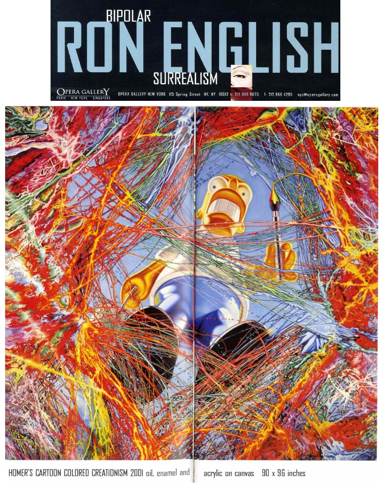
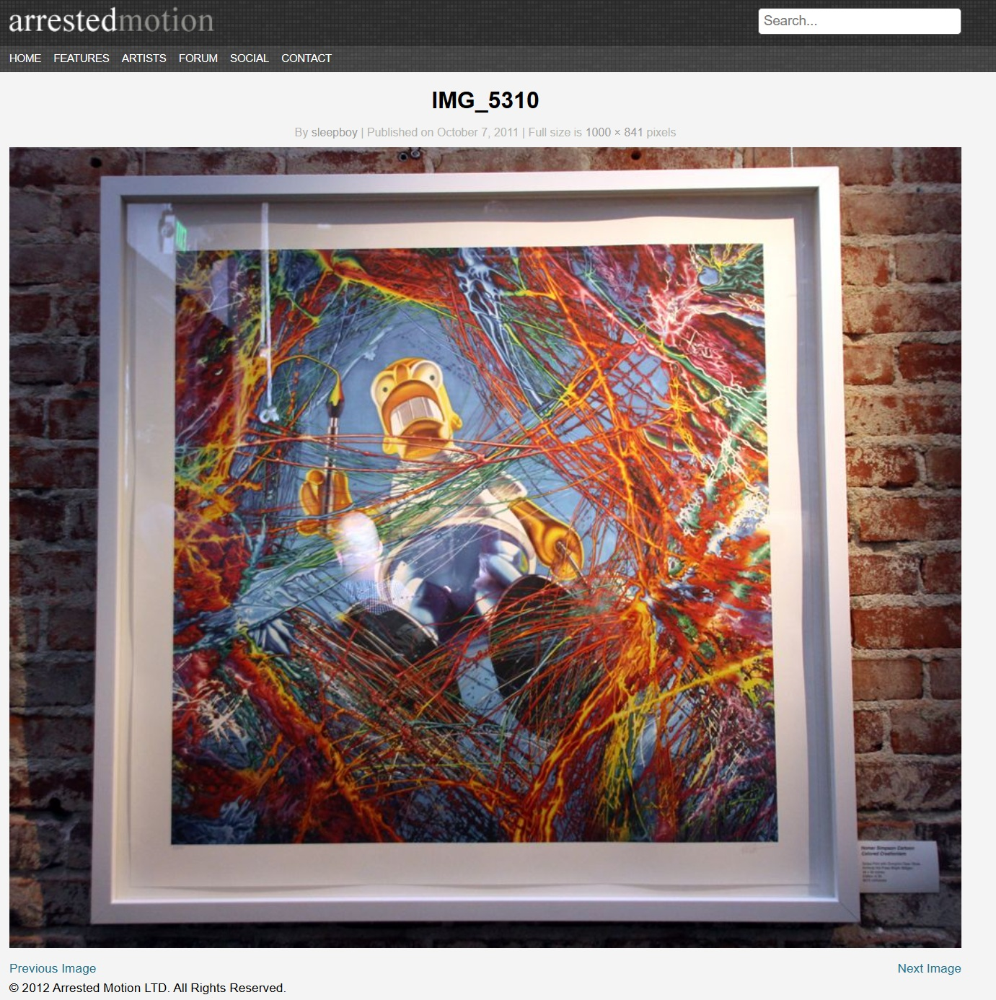
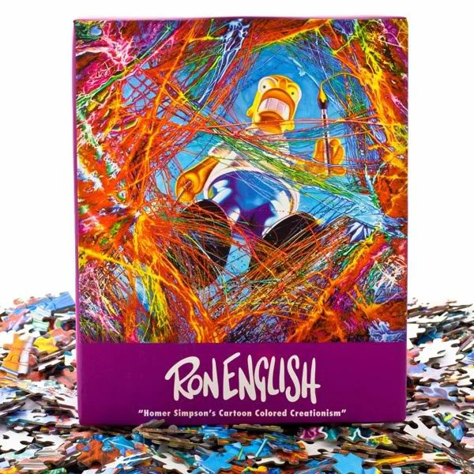
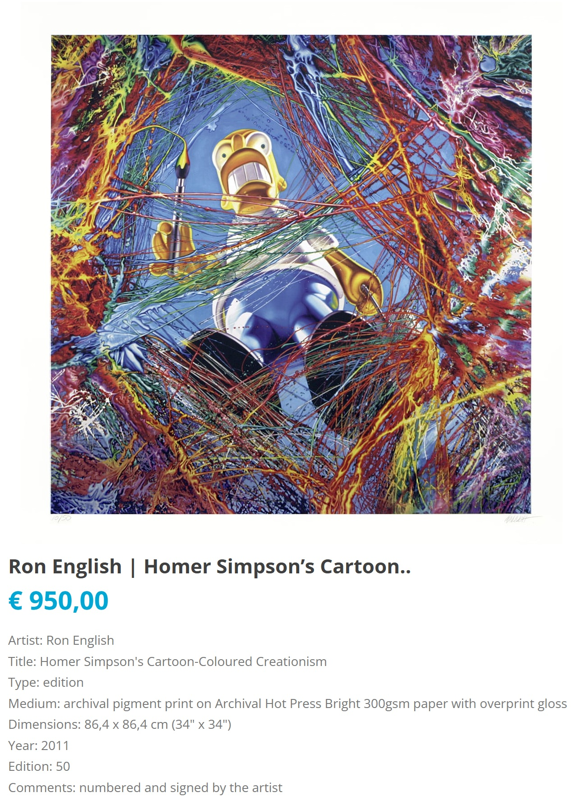

Exhibitions
Bipolar Surrealism, Opera Gallery, New York, New York, US, May 24–June 11, 2001.
Literature
Bipolar Surrealism (New York: Opera Gallery, 2001), exhibition catalogue.
Ron English, Abject Expressionism: The Art of Ron English (San Francisco: Last Gasp, 2007), p. 106. ISBN 978-0867196894.
Roger Gastman, comp., Morning Wood (Berkeley: Gingko Press, 2003), p. 263. ISBN 978-1584231592.
Ron English, Original Grin: The Art of Ron English (Paris: Cernunnos, 2019), p. 328. ISBN 978-2374950938.
Notes
This work is reproduced in the exhibition catalogue for Bipolar Surrealism, where it is titled Homer’s Cartoon Colored Creationism and identified as oil, enamel, and acrylic on canvas.
In Abject Expressionism, this work was erroneously reported as 278 × 78 inches.
The image shown in Arrested Motion coverage of English 101 at Post No Bills documents a related print, not the original work. In that print, the image of the original painting is reversed horizontally from the orientation of the painting itself.
This work references Homer Simpson from The Simpsons.
This composition was reproduced as a 1,000-piece jigsaw puzzle issued through DirtyPilot.
This composition was also reproduced as an editioned print.
A work-in-progress image documents the painting during development.
Ancillary Documentation
The following materials document catalogue reproduction, related print and puzzle formats, work-in-progress imagery, and source imagery connected to the work.






Selected Online Circulation
Selected examples of the work’s online circulation, reproduction, or discussion. This list is not exhaustive; it is intended to document representative appearances of the image beyond formal exhibition and publication records.